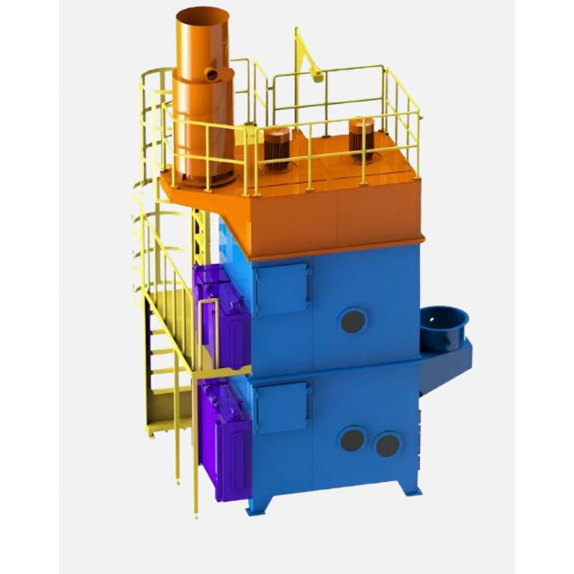
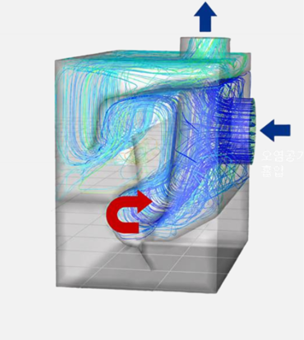
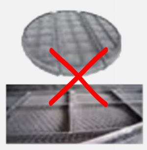
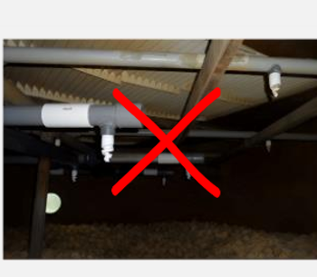
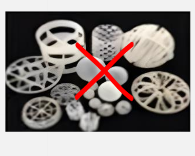
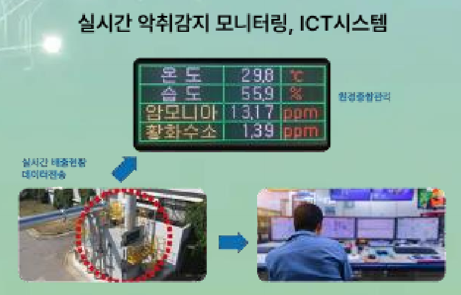
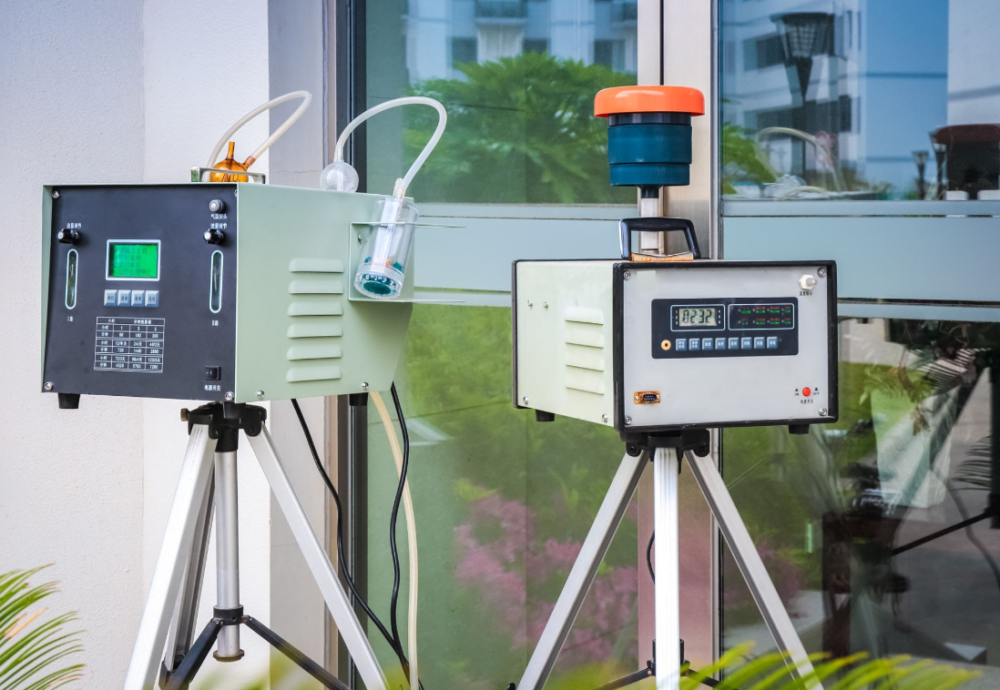

독자적 기술력으로 시장을 선도하는 기술을 제공합니다. 규격별 설계가 완료되어 다양한 산업현장에 즉시 적용이 가능합니다.
공정도

음압을 이용한 정지된 탈취액 수면 접촉 구현으로 병류현상이 없어서 유속의 제한에서 자유롭습니다.
2. 제품 특징

컴팩트한 구성품 일체형
송풍부, 약품부, 탈취부가 일체형으로 소요면적을 대폭 절감




충진물이 없는 내부구조
악취가 탈취액과 접촉하기 위해 배치되는 충진물과 탈취액 분사장치가 없는 구조로 교체 및 세척 유지관리비가 들지 않음

악취관리시스템(Safe Air Guard)
- 초기투자 부담 감소 (성능 미달 시 계약해지)
- 직접 설계한 장비 설치로 지속적인 성능유지 및 책임 명확
- 신속한 민원 대응까지
현장맞춤형
설계
설계
현장 진단을 바탕으로
최적 규격 및 설치안 설계
제작
안전기준에 따른
정밀 제작 및 품질검사
설치 및
시운전
시운전
탈취기 현장 설치 및
성능 확인
성능검증

측정장비를 통한
탈취 성능 정밀 검증
주기적인
점검
점검
정기 점검을 통한
지속적인 성능 유지관리
4. 주요 납품 실적